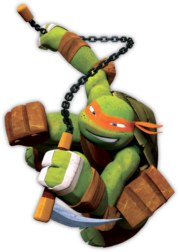

O bem humorado: Michelangelo
Michelangelo é a personagem que mais deixa claro que as tartarugas além de ninjas são também adolescentes.
É o alívio cômico do grupo, com uma personalidade muito mais extrovertida, relaxada e brincalhona que seus irmãos.
Possui também uma grande paixão por pizzas. Sua arma de escolha é o nunchaku e a cor de sua máscara é laranja.
Seu nove é inspirado no Michelangelo, famoso poeta, pintor e escultor, responsável pela Estátua de Davi e pela Pietà que se encontra na Basílica de São Pedro.
Fonte:aficionados
Pontos Fortes
Engraçado
Brincalhão
inocente
Cor
Amerelo
Arma
Kusarigama